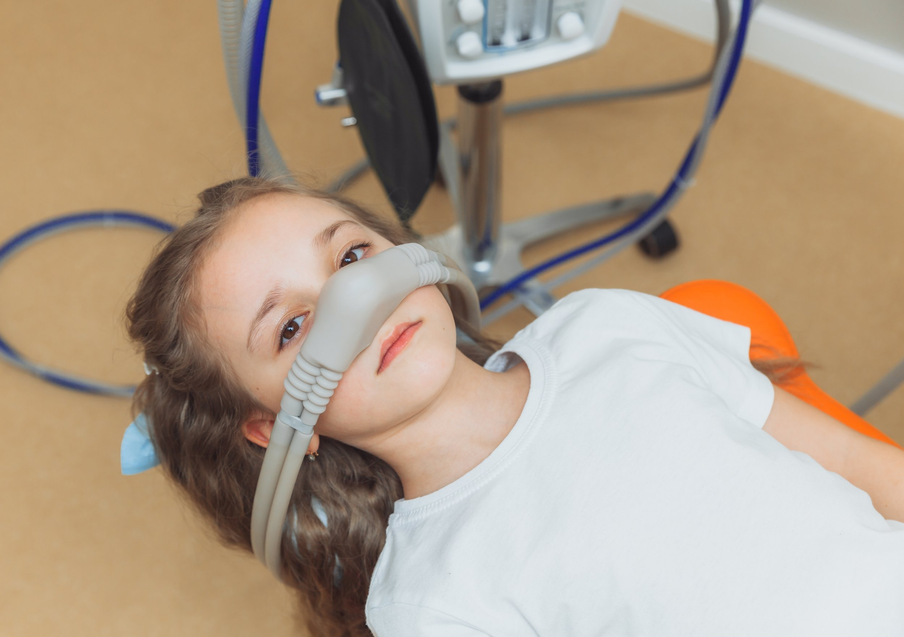

Es una técnica segura que utilizamos para ayudar a los pacientes a permanecer relajados durante el tratamiento dental. El paciente está despierto, pero en un estado de tranquilidad, con capacidad de responder a estímulos y órdenes verbales.
Administramos medicamentos ansiolíticos por vía oral, intravenosa o inhalatoria, según el caso. Nuestro anestesista controla en todo momento tus constantes vitales y nivel de consciencia.
Nuestro equipo está formado y certificado para la aplicación de sedación consciente en el entorno odontológico. Garantizamos un ambiente seguro, humano y libre de dolor para cada paciente.
